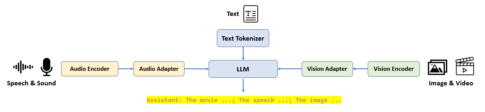

Trio: Targeted Relevant Information for Omni-Understanding
Overview

Framework
Examples
Input: Image-Speech (Chinese)
[音频文本] 这张图片有什么不同的地方嘛？请用中文回答

Trio:
这个场景非常不寻常，因为通常情况下，熨烫衣服是在家中或酒店等相对安静和私密的环境中进行。而在繁忙的城市街道上，特别是在纽约市这种通拥堵的地方，进行这样的活动是非常危险和不合法的。此外，这种行为也违反了当地的交通规则和安全规定。